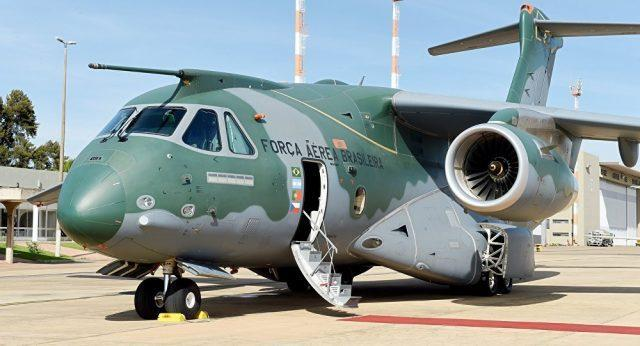
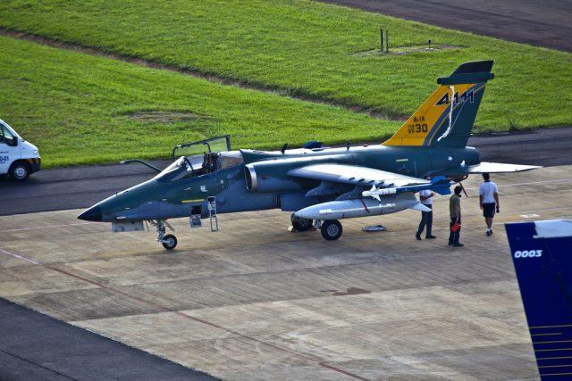

KC-390 Millennium

Valor de Mercado:
R$ 3.028.104.951
Avião cargueiro militar produzido pela EMBRAER. Aeronave para reabastecimento em voo Avião cargueiro militar produzido pela EMBRAER. Aeronave para reabastecimento em voo e transporte logístico e tático e transporte logístico e tático.
Uma força área que se preze, não é feita apenas de aviões caças, mas também de monomotores, helicópteros e principalmente, os cargueiros. Apesar de saberem disso, os demais países comumente não investem no desenvolvimentos de novos aviões de carga, focando suas compras nos já ultrapassados Hercules .
Exatamente por este motivo, o KC-390 Millennium é considerado um revolucionário para sua modalidade, tido como o cargueiro militar mais robusto do mercado.
A FAB recebeu a primeira unidade do KC-390 em 2019.
AMX

Valor de Mercado:
R$ 3.000.000.000
Uma das primeiras aeronaves militares produzidas pela EMBRAER, o AMX A-1.
Um avião de ataque, utilizado para reconhecimento de território, missões de interdição, apoio aéreo. Possui capacidade de operação de alta velocidade sônica e em baixa altitude.
O Brasil possui cerca de 53 unidades do AMX A-1.